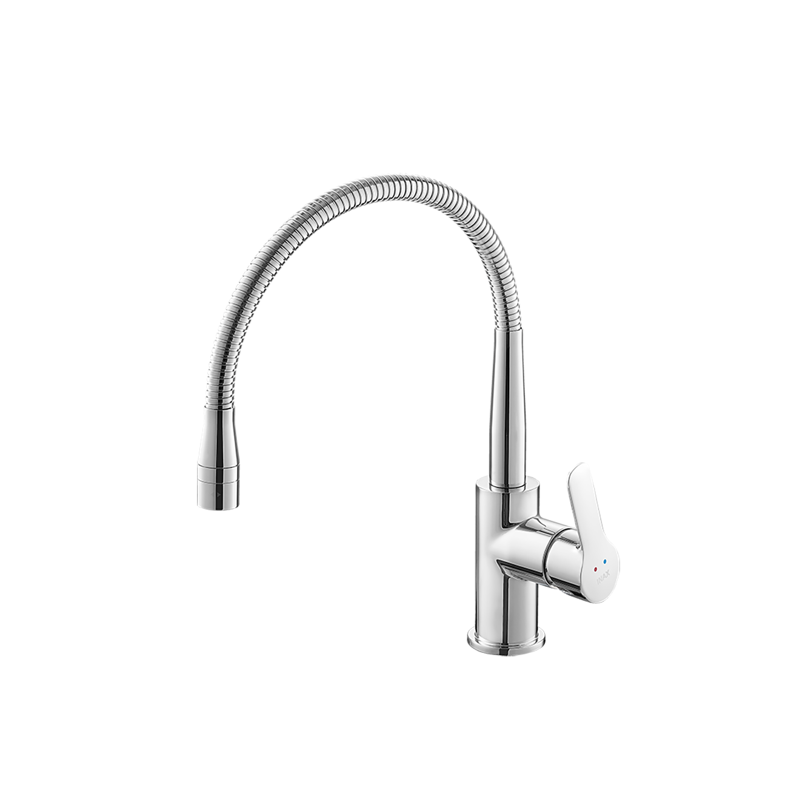
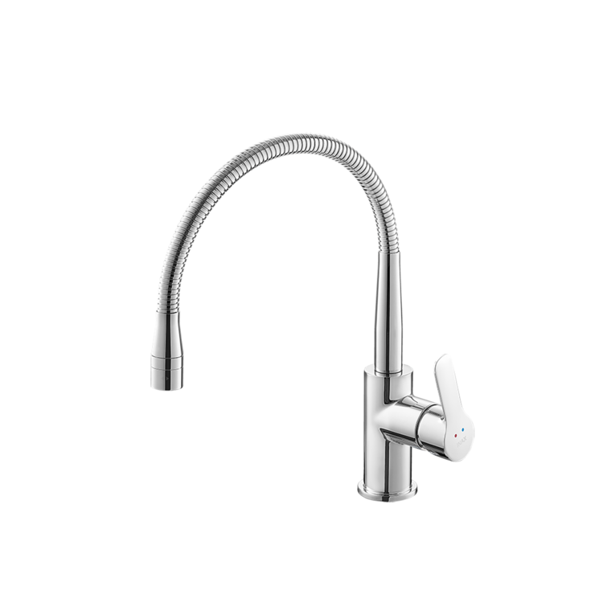

Vòi bếp SFV-303S là mẫu vòi rửa bát nóng lạnh cao cấp được thiết kế để mang lại sự tiện nghi và vẻ đẹp tinh tế cho không gian bếp hiện đại. Với cấu trúc cần mềm linh hoạt và hai chế độ nước nóng lạnh, sản phẩm đáp ứng tối đa nhu cầu sử dụng đa dạng của người dùng.Ưu điểm của vòi chậu rửa bếp SFV-303SThiết kế cần mềm và cổ lò xo linh hoạtCổ vòi bếp SFV-303S dạng lò xo có khả năng xoay toàn diện 360°, cho phép người dùng dễ dàng điều hướng dòng nước sang trái hoặc phải giữa các bồn rửa.Thiết kế cần mềm có thể uốn cong và thay đổi chiều cao linh hoạt theo nhu cầu thực tế, giúp dòng nước dễ dàng chạm đến mọi ngóc ngách trong bồn rửa chénSản phẩm có chiều cao 371mm và chiều rộng 231mm, tạo không gian thao tác rộng rãi và thoải mái.Hai chế độ phun nước thông minhĐầu vòi được tích hợp hai chế độ phun nước riêng biệt, giúp tiết kiệm nước và phục vụ nhiều mục đích khác nhau, bao gồm:Chế độ phun mưa: Tạo ra dòng nước êm ái, lý tưởng để rửa thực phẩm, rau củ mà không gây văng bắn.Chế độ phun mạnh: Tạo áp lực nước tập trung, hỗ trợ đắc lực trong việc cọ rửa bồn bát và làm sạch các vết bẩn cứng đầu.Chất liệu bền bỉ, đạt chuẩn công nghệ Nhật BảnVòi bếp SFV-303S được đúc từ đồng thau nguyên khối với kết cấu chắc chắn, đảm bảo độ bền cao và an toàn cho nguồn nước, không gây nhiễm khuẩn.Bề mặt vòi được phủ lớp mạ sáng bóng, có khả năng chống trầy xước, chống oxy hóa hiệu quả và giữ cho sản phẩm luôn bền đẹp theo thời gian.Kết cấu đơn giản nhưng liền mạch giúp hạn chế tối đa tình trạng rò rỉ nước sau thời gian dài sử dụng, mang lại sự hài lòng tuyệt đối.Video giới thiệu về vòi bếp INAXThông số kỹ thuậtMã sản phẩmSFV-303SLoại vòiVòi rửa bát nóng lạnh / Vòi rửa chén cần mềm lò xoKích thước (Cao x Rộng)371 x 231 (mm)Thương hiệuINAXKiểu dángThiết kế cổ lò xo hiện đại với cần mềm có khả năng định hình và xoay linh hoạt 360°, giúp mở rộng tối đa phạm vi xả rửaChất liệuThân vòi bằng Đồng thau mạ Crom/Niken cao cấp, chống gỉ sét, chống ăn mòn và giữ bề mặt luôn sáng bóng bền bỉChế độ nước2 chế độ Nóng và Lạnh linh hoạt, đáp ứng trọn vẹn nhu cầu sơ chế hay dọn rửa hàng ngàyThiết kế đầu vòiTích hợp **2 chế độ phun thông minh**, dễ dàng chuyển đổi bằng nút bấm: - Phun mưa (diện rộng): Dòng nước êm ái, nhẹ nhàng chuyên dụng để rửa rau củ, thực phẩm - Phun mạnh (áp lực cao): Tạo tia nước xoáy mạnh mẽ giúp đánh bay dầu mỡ và dọn rửa lòng bồn nhanh chóngMàu sắcCrom sáng bóng phối hợp chất liệu cao cấp, dễ dàng lau chùi và hạn chế bám bẩnKhác- Hotline tư vấn và bảo hành chính hãng: 18006633
Vòi bếp SFV-303S
Vòi bếp thương hiệu INAX.
Đã cập nhật danh sách yêu thích.
DANH MỤC: Vòi bếp
MÃ SẢN PHẨM: SFV-303S
DEPTH: 0mm
HEIGHT: 371mm
WIDTH: 231mm
Vòi bếp SFV-303S là mẫu vòi rửa bát nóng lạnh cao cấp được thiết kế để mang lại sự tiện nghi và vẻ đẹp tinh tế cho không gian bếp hiện đại. Với cấu trúc cần mềm linh hoạt và hai chế độ nước nóng lạnh, sản phẩm đáp ứng tối đa nhu cầu sử dụng đa dạng của người dùng.Ưu điểm của vòi chậu rửa bếp SFV-303SThiết kế cần mềm và cổ lò xo linh hoạtCổ vòi bếp SFV-303S dạng lò xo có khả năng xoay toàn diện 360°, cho phép người dùng dễ dàng điều hướng dòng nước sang trái hoặc phải giữa các bồn rửa.Thiết kế cần mềm có thể uốn cong và thay đổi chiều cao linh hoạt theo nhu cầu thực tế, giúp dòng nước dễ dàng chạm đến mọi ngóc ngách trong bồn rửa chénSản phẩm có chiều cao 371mm và chiều rộng 231mm, tạo không gian thao tác rộng rãi và thoải mái.Hai chế độ phun nước thông minhĐầu vòi được tích hợp hai chế độ phun nước riêng biệt, giúp tiết kiệm nước và phục vụ nhiều mục đích khác nhau, bao gồm:Chế độ phun mưa: Tạo ra dòng nước êm ái, lý tưởng để rửa thực phẩm, rau củ mà không gây văng bắn.Chế độ phun mạnh: Tạo áp lực nước tập trung, hỗ trợ đắc lực trong việc cọ rửa bồn bát và làm sạch các vết bẩn cứng đầu.Chất liệu bền bỉ, đạt chuẩn công nghệ Nhật BảnVòi bếp SFV-303S được đúc từ đồng thau nguyên khối với kết cấu chắc chắn, đảm bảo độ bền cao và an toàn cho nguồn nước, không gây nhiễm khuẩn.Bề mặt vòi được phủ lớp mạ sáng bóng, có khả năng chống trầy xước, chống oxy hóa hiệu quả và giữ cho sản phẩm luôn bền đẹp theo thời gian.Kết cấu đơn giản nhưng liền mạch giúp hạn chế tối đa tình trạng rò rỉ nước sau thời gian dài sử dụng, mang lại sự hài lòng tuyệt đối.Video giới thiệu về vòi bếp INAXThông số kỹ thuậtMã sản phẩmSFV-303SLoại vòiVòi rửa bát nóng lạnh / Vòi rửa chén cần mềm lò xoKích thước (Cao x Rộng)371 x 231 (mm)Thương hiệuINAXKiểu dángThiết kế cổ lò xo hiện đại với cần mềm có khả năng định hình và xoay linh hoạt 360°, giúp mở rộng tối đa phạm vi xả rửaChất liệuThân vòi bằng Đồng thau mạ Crom/Niken cao cấp, chống gỉ sét, chống ăn mòn và giữ bề mặt luôn sáng bóng bền bỉChế độ nước2 chế độ Nóng và Lạnh linh hoạt, đáp ứng trọn vẹn nhu cầu sơ chế hay dọn rửa hàng ngàyThiết kế đầu vòiTích hợp **2 chế độ phun thông minh**, dễ dàng chuyển đổi bằng nút bấm: - Phun mưa (diện rộng): Dòng nước êm ái, nhẹ nhàng chuyên dụng để rửa rau củ, thực phẩm - Phun mạnh (áp lực cao): Tạo tia nước xoáy mạnh mẽ giúp đánh bay dầu mỡ và dọn rửa lòng bồn nhanh chóngMàu sắcCrom sáng bóng phối hợp chất liệu cao cấp, dễ dàng lau chùi và hạn chế bám bẩnKhác- Hotline tư vấn và bảo hành chính hãng: 18006633
DANH MỤC: Vòi bếp
MÃ SẢN PHẨM: SFV-303S
DEPTH: 0mm
HEIGHT: 371mm
WIDTH: 231mm